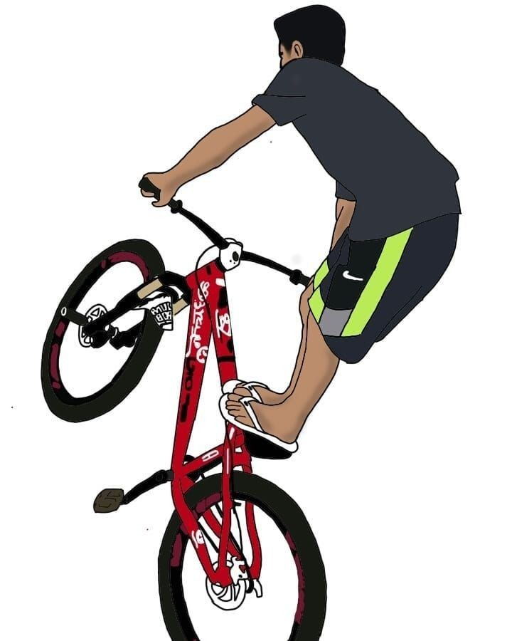

Meu primeiro post sobre o "grau"
Por: JHON PYETRO
Sejam muito bem-vindos!
Hoje vamos explorar o universo do grau de bike (ou wheeling).
Vamos entender como essa prática deixou de ser apenas uma manobra de rua para se transformar em uma manifestação cultural
legítima e um esporte em plena ascensão no Brasil.
Fonte: Google